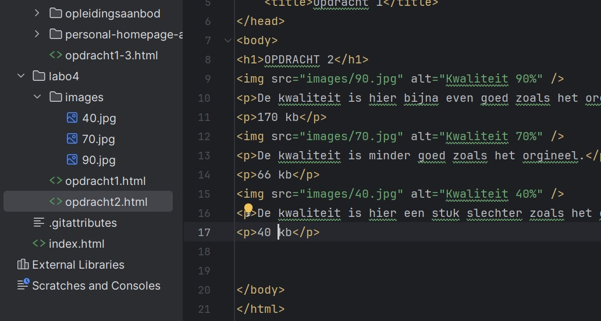
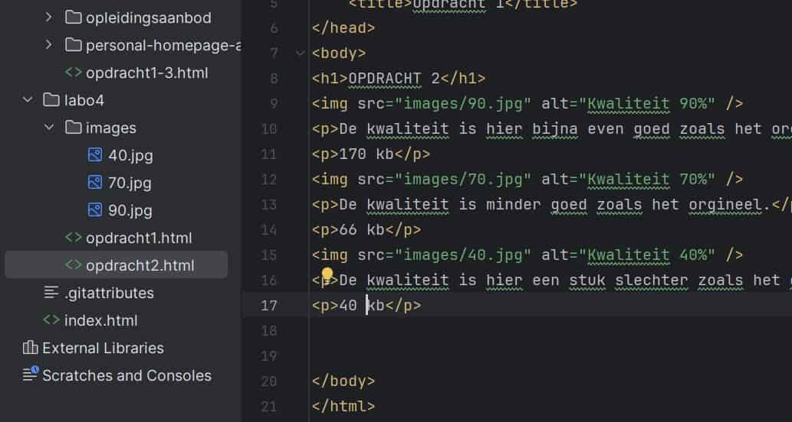

De kwaliteit is hier bijna even goed zoals het orgineel.
170 kb
De kwaliteit is minder goed zoals het orgineel.
66 kb
De kwaliteit is hier een stuk slechter zoals het orgineel.
40 kb
------
De kwaliteit is hier bijna even goed zoals het orgineel.
92 kb
De kwaliteit is minder goed zoals het orgineel.
46 kb
De kwaliteit is hier een stuk slechter zoals het orgineel.
29 kb